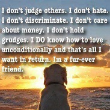
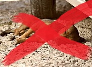

ABOUT US...
Watching poor animals lying at those filthy streets,without someone aside to take care of them and choosing to leave doesn't show any humanity.
They are living creatures,too!
That's why we came up with the idea of creating a website for abandoned animals {cats,dogs etc}.
Whoever finds an animal in need, can use our website to register and then, this way, allows an interested person to adopt it and provide a warm place.
The website includes was created by: Egi Kazani,Ledio Duda, Sirena Ahmeti and Zixhana Stafa.
PERFECT TIME FOR SOME EMPATHY!
With the aid of collaboration we will lead ourselves to a happier tomorrow!


|